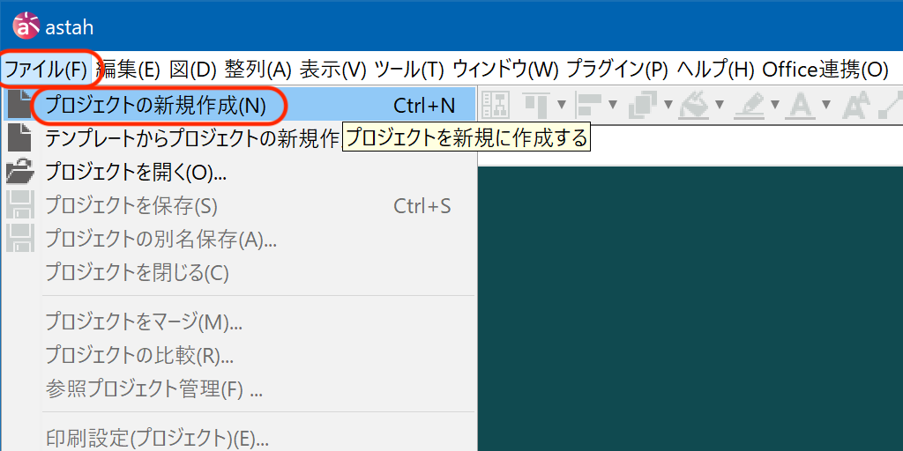
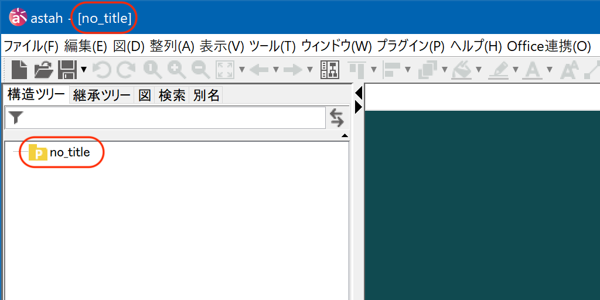
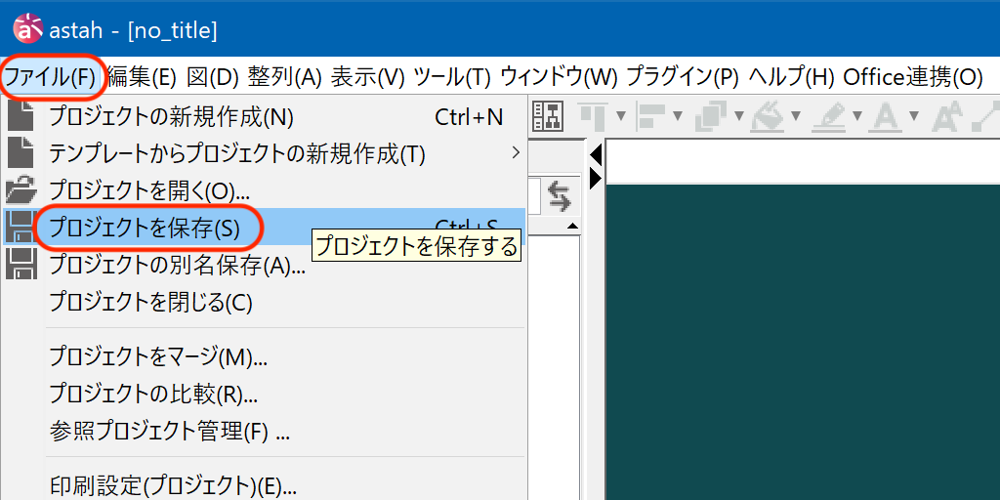
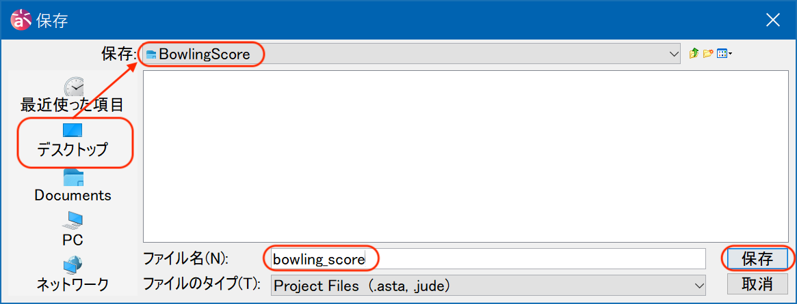
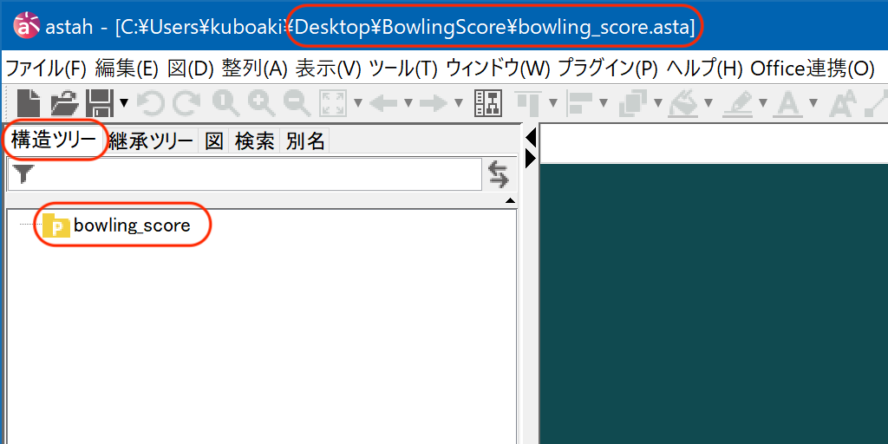
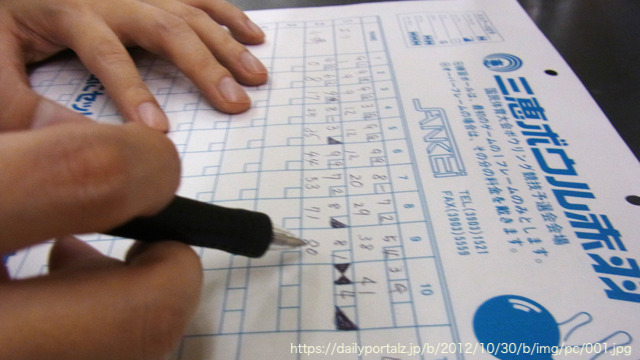
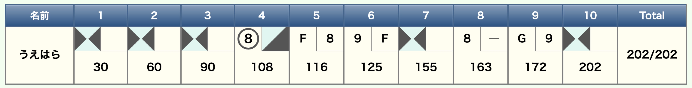

第1章 準備
このチュートリアルでは、モデリングツールとして astah* Professional Professional を、実装にはRubyを使います。 最初に、演習に必要な環境を用意しましょう。
1.1. モデリングツールを用意する
このチュートリアルで使用するモデリングツール astah* Professional Professional を用意しましょう。
購入前に試用したい場合は、次のページを参照してください。
購入する場合は、次のページを参照して、自分に合ったライセンスを選択してください。
- 最適なライセンスを見つける
いずれかの方法で、 astah* Professional Professional を入手できたら、次のページを参照して、自分に合ったライセンスを登録してください。
1.2. 開発環境を用意する
1.2.1. ブラウザ・ターミナル・テキストエディタ
Webアプリですので、動作確認には、Webブラウザが必要です。
- Webブラウザ
-
Google Chrome、Safari、Firefox、Edgeなど、モダンなブラウザであればどれでも動作します。開発者ツールが使えるブラウザを推奨します。
Rubyプログラムの実行、Webサーバーの起動などには、ターミナルを使います。
- ターミナル（コマンドライン）
-
macOSならTerminal.app、WindowsならWindows Terminalなどです。
プログラムを作成するにはプログラミング用のテキストエディタが必要です。
- テキストエディタ
-
Visual Studio Code、Sublime Text、Atom、Vim、Emacsなど。プログラミング用の支援機能があるエディタを使いましょう。
1.2.2. 想定するオペレーティングシステム
以下のいずれかのOSで動作を確認しています。
-
macOS 12以降
-
Ubuntu 20.04以降
-
Windows 10/11（WSL2使用）
|
このチュートリアルのサンプルコードは、主にmacOSとLinuxで動作を確認しています。 Windowsで実行する場合は、WSL2（Windows Subsystem for Linux）の使用を検討してみてください。 |
1.2.3. ネットワーク環境
Webアプリですので、ウェブサーバーとクライアント（Webブラウザ）がネットワークを介してやり取りします。 また、開発に使うライブラリを取得するためには、インターネット接続た必要です。
- インターネット接続
-
Rubyのgemパッケージをインストールするためにインターネット接続が必要です。
- ローカルホスト
-
開発するWebアプリケーションは、自分のコンピュータ上で動作します（localhost:4567など）。Webアプリの動作を確認するのであれば、他のホストからの接続は許可しなくても済むでしょう。
1.2.4. 演習用ディレクトリを用意する
アプリケーション開発に使うディレクトリ（フォルダ）を用意しましょう。 ターミナルから使用するときに便利なよう、日本文字列やスペースを含まないディレクトリ名で扱える場所を用意します。
たとえば、macOSやUbuntuのターミナルで、次にようにすればよいでしょう。
$ cd (1)
$ mkdir codes (2)
$ cd codes (3)| 1 | 引数なしの cd コマンドで、ホームディレクトリへ移動した（または、みなさんの都合のよい場所へ）。 |
| 2 | mkdir コマンドで、演習用ディレクトリ codes を作成した。 |
| 3 | cd コマンドで、演習用ディレクトリ codes へ移動した。 |
ターミナル操作の説明の各行頭の $ は入力待ちのプロンプト表示です。入力の一部ではありませんので注意しましょう。。
|
1.2.5. 開発環境
このチュートリアルでは、実装において、プログラミング言語に「Ruby」、Webフレームワークとして「Sinatra」、データベースとして「SQLite3」 を使います。これらを用意しましょう。
Ruby
Ruby [ruby-website] は、Windows、Mac、Linuxで動作するオープンソースの言語プログラミング言語です。 インストール方法は利用環境によって異なります。
このチュートリアルの作成時には、 rbenv や ruby-build を使って、 3.4.4 をインストールしました。
詳しくは、Rubyの公式サイトの説明や、関連するウェブサイトの記事を参考にしてください。
プログラミング言語Rubyについて詳しくない方は、参考文献から、たとえば [ruby-fol] や [ruby-qs] などに当たるとよいでしょう。
$ pwd (1)
/Users/kuboaki/（略）/codes/ (2)
$ rbenv versions (3)
system
2.7.2
3.3.1
3.3.3
3.3.5
* 3.4.4 (set by /Users/kuboaki/（略）/codes/.ruby-version) (4)| 1 | pwd コマンドで現在のディレクトリを確認した。 |
| 2 | 現在のディレクトリが演習用ディレクトリと確認できた。 |
| 3 | rbenv コマンドで、インストール済みのRubyをリストアップした。 |
| 4 | 現在の（つまり演習用の）ディレクトリでは 3.4.4 が使われることを確認した。 |
SQLite3
このチュートリアルでは、ファイルベースのデータベースであるSQLiteを使います。 クライアント・サーバー型と異なり、ライブラリAPIがあれば簡単に利用できるので、このチュートリアルのような使途に向いているでしょう。 執筆時点では、 1.7 を使いました。
- SQLite
インストールには、macOSなら homebrew、Linux（Ubuntuなど）ならaptのようなパッケージ・マネージャを使ってインストールするとよいでしょう。
Windowsの場合は、SQLiteのウェブサイトのダウンロードページの「Precompiled Binaries for Windows」の中から、自分のPCに合うものを選択してダウンロードし、下記のファイルを、環境変数 PATH の通った場所に置けばよいでしょう。
sqlite3.exe sqldiff.exe sqlite3_analyzer.exe sqlite3_rsync.exe
インストールできたら、SQLite3が利用可能かどうか、確認します。
$ sqlite3 --version (1)
3.50.4 2025-07-30 19:33:53 4d8adfb30（略）5e20a3 (64-bit)| 1 | sqlite3 コマンドのバージョンを表示した。 |
動作確認用のデータベースを作って動作を確認しましょう。
$ sqlite3 test.db (1)
SQLite version 3.50.4 2025-07-30 19:33:53
Enter ".help" for usage hints.
sqlite> CREATE TABLE names (id INTEGER PRIMARY KEY, name TEXT); (2) (3)
sqlite> INSERT INTO names (name) VALUES ('kuboaki'), ('uehara'); (4)
sqlite> SELECT * FROM names; (5)
1|kuboaki
2|uehara
sqlite> .exit (6)| 1 | test.db という名前のデータベースを作成する。 |
| 2 | コマンド実行中は、 sqlite> というプロンプト（入力を促す記号）が出ている。 |
| 3 | CREATE TABLE文を使って names テーブルを作成した。 |
| 4 | INSERT文を使ってレコードを挿入した。 |
| 5 | SELECT文を使ってレコードを抽出した。 |
| 6 | .exit でコマンドを終了した（先頭に . をつけることに注意）。 |
Sinatra
このチュートリアルでは、Webアプリを作成します。 Webアプリについてあまり馴染みがない方は、先に基本的なことを学んでおくとよいでしょう。
このチュートリアルでは、Webアプリ用フレームワークとして、Sinatraを使います。 執筆時点では、 4.0 を使いました。
- Sinatra
Sinatra は、Ruby向けのWebアプリフレームワークのひとつで、コンパクトな仕様と簡便なプログラミングによって実装可能なことが特徴です。
SinatraはRubyのライブラリ（gemパッケージ）として提供されています。
パッケージの導入にBundlerを使わない場合には、次のように gem コマンドを使ってインストールします。
gem install sinatra logger ostruct rackup webrick sqlite3 (1) (2)| 1 | gem コマンドを使ってgemパッケージをインストールした。 |
| 2 | 一緒に使う予定のgemパッケージも同時に追加した。 |
Bundlerを使う場合には、まず、演習用ディレクトリに Gemfile を用意します。
# frozen_string_literal: true
source 'https://rubygems.org'
ruby '3.4.4'
gem 'logger', '~> 1.6' (1)
gem 'ostruct', '~> 0.6' (2)
gem 'rackup', '~> 2.1'
gem 'sinatra', '~> 4.0'
gem 'sqlite3', '~> 2.0' (3)
gem 'webrick', '~> 1.8'
group :development do
gem 'rerun', '~> 0.14'
end| 1 | loggwe は、Ruby 3.4 で bundled gem になったため、明示的に導入を指示した。 |
| 2 | ostruct は、Ruby 3.4 で stdlib から外れたため、明示的に導入を指示した。 |
| 3 | SQLite3をRuby 3.4 といっしょに使うため、sqlite3用パッケージは 2.x 系を指定した。 |
そして、 bundler コマンドを使ってインストールします。
$ pwd
/Users/kuboaki/（略）/codes/ (1)
gem install bundler (2)
bundle install (3)| 1 | 現在のディレクトリを確認した。 |
| 2 | Bundlerをインストールした。 |
| 3 | bundler コマンドで、必要なgemパッケージをインストールした。 |
Sinatraを使ったWebアプリの書き方については、Sinatraのウェブサイトの「Getting Started」を参照するとよいでしょう。
1.3. 演習用のプロジェクトを用意する
業務やシステムを分析（あるいは設計）するときにUMLのモデル図を使う場合、モデリングの対象のいくつかの側面について、それぞれに向いた図を作成することが一般的です。
複数の図で表すのは、大きな問題ならば分割して小さな問題として捉えるほうが整理しやすいからです。 たとえば、システム全体の構造と、その内部のある構成要素の内部の構造を別の図に分けることができるでしょう。 また、関心事によって表すもの（モデルに残すものや削るもの）が変わるからです。 たとえば、あるシステムを設計するのに、構造を表すためにクラス図を使い、振る舞いを表すのにシーケンス図やステートマシン図使うといったことです。
astah* Professional でも、モデリングの対象に関連した複数の図をまとめて扱えるよう、ひとまとまりのファイルに保存します。astah* Professional では、この複数の図のまとまりのことを「プロジェクト」と呼んでいます。
1.3.1. astah* Professional のプロジェクトを作成する
それでは、演習用に astah* Professional のプロジェクトを用意しましょう。
-
astah* Professional を起動する。
-
「ファイル」メニューから「プロジェクトの新規作成」を選択する（ 図 1.1 ）。

-
「no_title」という名前で新しいプロジェクトが作成される（ 図 1.2 ）。

1.3.2. 作成したプロジェクトを保存する
新規プロジェクトを作成したら、最初に保存しておき、それからモデルの作成に入るようにするとよいでしょう。
-
「ファイル」メニューから「プロジェクトを保存」を選択する（ 図 1.3 ）。

-
「保存」ダイアログが開くので、プロジェクトの保存場所と保存するファイル名を指定する。
-
ここでは、保存場所として「デスクトップ」に「BowlingScore」フォルダーを作成した。
-
ファイル名に「bowling_score」を指定して保存した（ 図 1.4 ）。
-

-
保存すると、プロジェクトファイルにつけた名前が「構造ツリー」に反映される（ 図 1.5 ）。

|
astah* Professional のプロジェクトの作り方についての詳しい説明は、機能ガイドの「プロジェクトの作成と利用」を参考にしてください。
|
1.4. ボウリングのスコアのつけ方
ボウリング場では、だいぶ前（1980年代の終りくらい）から、スコアを自動計算してディスプレイに表示するシステムが使われるようになっています。 自動化される前は、受付でスコアシートをもらって、自分たちでスコアを計算し、手書きでスコアをつけていました（ 図 1.6 ）。

ボウリングの規則とスコアのつけ方について、公益財団法人「全日本ボウリング協会」の「ボウリング競技規則」を参考に、まとめてみました。
- 公益財団法人「全日本ボウリング協会」のボウリング競技規則
1.4.1. ボウリングスコアに使う記号
ボウリングスコアに使う記号と意味を 表 1.1 に示します。
| 記号 | 名称 | 意味 |
|---|---|---|
ストライク |
1投目で10本全てを倒した場合。ストライクをだしたフレームの得点は、次の2投分を加算する。2回続いたら3フレーム目の1投目までを加算する。スコア欄は、それまでは空欄にしておく。ストライクが続くことを「ダブル」「トリプル（ターキー）」と呼ぶ。 |
|
スペア |
1投目で残ったピンを、2投目で全部倒した場合。次の1投分を加算する。スコア欄は、それまでは空欄にしておく。 |
|
ミス |
フレームの2投目でピンを1本も倒せなかった場合。2投目でガターに落ちても「G」の記号は使わずにこの記号を使う。そのフレームの得点は、1投目で倒したピン数になる。なお、1つのフレームで 2 回投球し、10本のピンを全部倒すことができなかった場合をエラーという。 |
|
ガター |
1投目でレーンの両脇にある溝（ガター）にボールが落ちた場合。2投目はガターに落ちた場合も「ミス」として扱う。 |
|
スプリット |
1投目で1番ピン（ヘッドピンともいう）と他のいくつかのピンが倒れ、2 本以上のピンが次のような状態に残った場合。スプリットの場合は、1投目のピン数を○で囲む。 （残っているピンの中間のピンが少なくとも1本倒れたとき。例えば7と9あるいは3と10。残っているピンのすぐ前のピンが少なくとも1本倒れたとき。例えば5と6。） |
|
ファウル |
ファウルラインを越えて投球されたという記号。1投目でファウルした場合、ピンを倒しても1投目のピン数は0になる。2投目は全ピンを立て直す。2投目でファウルした場合、ピンを倒しても2投目のピン数は0になる。第10フレームの3投目がファウルの場合、ピンを倒しても3投目のピン数は0になる。 |
1.4.3. カレントフレームスコアリング
2018年アジア競技大会で採用された新しいスコア計算方式です。

|
ボーリングのハンディキャップは、参加者が普段プレーしているときのアベレージ（平均スコア）を基に、力量に応じて設定するそうです。 このチュートリアルでは、ハンディキャップは取り扱わないでおきます。 |
1.4.4. スコアの付け方をもう少し詳しく
このチュートリアルで作成するプログラムで実現する処理でもありますので、ボウリングのスコアのつけ方についてもう少し詳しく確認しておきましょう。
ボウリングの基本ルール
ボウリングの1ゲームは、10フレームで構成されています。プレイヤーは1フレームに最大2回投球できます。
-
1投目で10本すべてのピンを倒した場合は「ストライク」（そのフレームは終了）。
-
2投で10本すべてのピンを倒した場合は「スペア」。
-
2投しても10本倒せなかった場合は「ミス」。
スコアの計算方法
ストライクやスペアの場合は、倒したピン数だけでなく、ボーナス点が加算されます。
- ストライクの場合
-
-
10点 + 次の2投で倒したピン数がボーナス点として加算される。
-
例: ストライク（10点）+ 次の1投目（7点）+ 次の2投目（2点）= 19点
-
-
- スペアの場合
-
-
10点 + 次の1投で倒したピン数がボーナス点として加算される。
-
例: スペア（5+5=10点）+ 次の1投目（7点）= 17点
-
-
- ミスの場合
-
-
倒したピン数の合計がそのフレームのスコアになる。
-
ボーナス点はなし。
-
-
スコア計算の例
表 1.2 にスコアの計算例を示します。
| フレーム | 投球結果 | フレームスコア | 累計スコア |
|---|---|---|---|
1 |
7, 0 |
7 |
7 |
2 |
5, 5 (スペア) |
10 + 次の1投(10) = 20 |
27 |
3 |
10 (ストライク) |
10 + 次の2投(10+5) = 25 |
52 |
4 |
10 (ストライク) |
10 + 次の2投(5+4) = 19 |
71 |
5 |
5, 4 |
9 |
80 |
このように、ボウリングのスコア計算は、単純な足し算ではなく、「ストライクとスペアでは異なる方法で次のフレームの結果を待つ」という状態管理が必要になります。
この計算ルールをUMLでモデル化し、RubyでWebアプリを実装するのが、このチュートリアルの目標です。